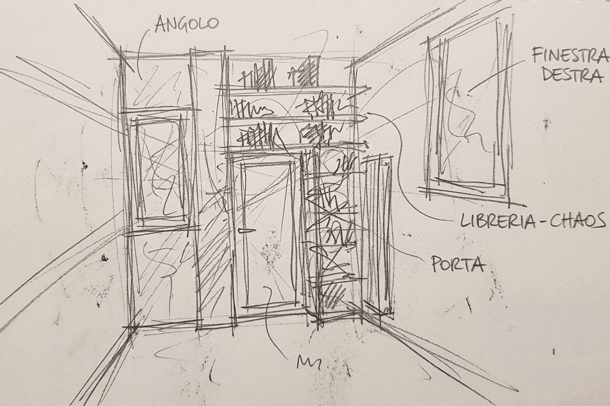
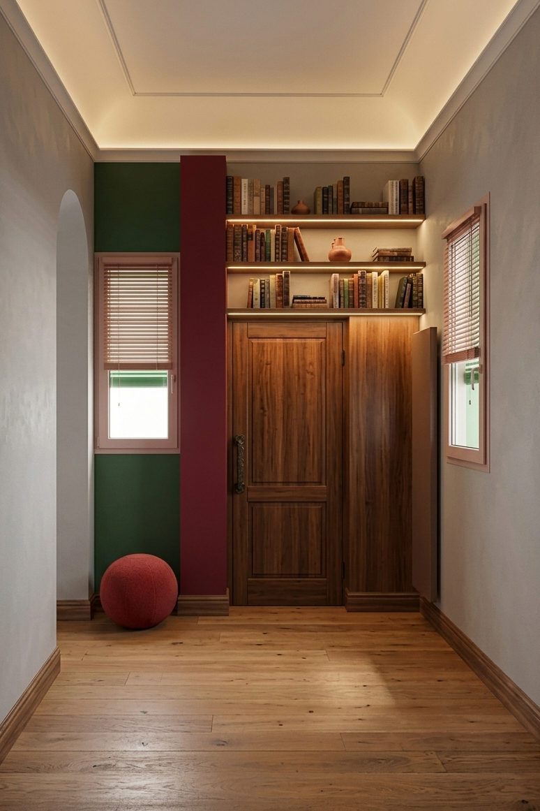
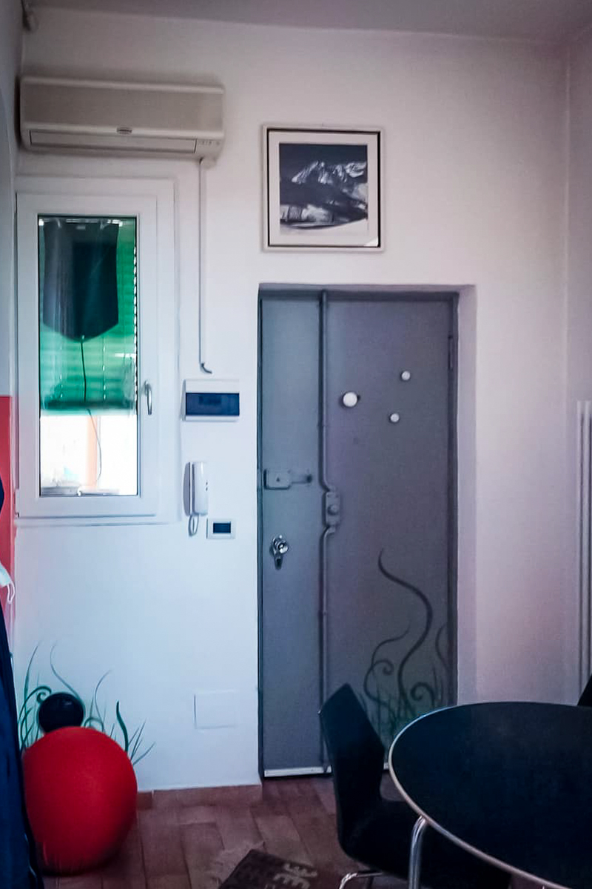

2022
[ Fotografie ]
In Bilico tra Passato e Futuro
Riqualificazione ingresso-soggiorno, Centro Storico (Ferrara)
L'intervento in questo piccolo appartamento nel cuore di Ferrara è la prova che non servono metrature da attico newyorkese per fare del buon design[cite: 1, 20]. L'obiettivo della committenza era duplice e sfidante: ottimizzare uno spazio limitato e conferire una forte identità contemporanea, pur rispettando la memoria del luogo[cite: 2]. La situazione di partenza (ante operam) era un classico esempio di frammentazione visiva [cite: 1]: un ingresso angusto, ostaggio di elementi tecnici a vista (climatizzatore, citofono, un vecchio radiatore in ghisa) e di un mix improbabile di finiture, tra pavimenti in ceramica e legno, pareti rosa acceso e una porta blindata con un pattern floreale ormai fuori tempo massimo[cite: 4, 5].
Abbiamo optato per un approccio radicale ma sartoriale[cite: 7]. Per eliminare il "rumore visivo", gli elementi tecnici sono stati nascosti, mimetizzati o sostituiti con varianti moderne e meno invasive[cite: 14, 15, 16]. Il fulcro del progetto diventa un sistema d'arredo su misura in pregiato legno di noce, che incornicia la nuova porta d'ingresso e sale fino a soffitto trasformandosi in una libreria a giorno con luci integrate[cite: 12, 13]. Le pareti, trattate con un intonaco materico grigio fumo, vengono interrotte solo da una scenografica nicchia verde bosco, mentre a terra un listone in rovere nodoso restituisce finalmente continuità e calore all'intero ambiente[cite: 9, 11].
La cura del dettaglio fa da ponte tra il design democratico e l'eleganza del lusso: modanature geometriche a soffitto, interruttori in ottone spazzolato e listelli in bronzo[cite: 10, 19]. L'illuminazione, completamente riprogettata, sfrutta gole luminose e strip LED[cite: 10, 17]. Un approccio esteticamente raffinato, ma anche profondamente orientato all'efficienza energetica e all'uso di materiali naturali.


